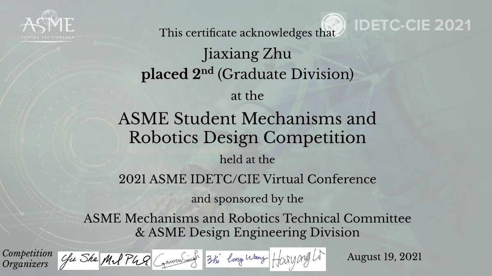

Dr. Jiaxiang Zhu is a Lecturer in Mechanical Engineering at Aston University, UK. His research specializes in the design, nonlinear analysis, and experimental validation of advanced compliant mechanisms that enable precise motions for high-precision applications such as nano-positioning systems, surgical tools, and precision robotics.
His work integrates modeling, fabrication, and system optimization to advance compliant design principles in the fields of robotics and precision motion systems.
FlexureX Lab
Ultra-precise motion via flexible structures
Nonlinear Design
Innovative flexure systems optimized through nonlinear modeling and analysis.
Flexure Mechanisms
Design of compliant structures for compact, precise motion transmission.
Nano-Positioning
High-precision mechanisms for micro/nano manipulation and metrology.
Surgical Robotics
Flexible and safe robotic tools enabled by compliant mechanisms.
Awards & Honors
ASME Compliant Mechanisms Award
American Society of Mechanical Engineers
2022
Publication of the Year Award
School of Engineering & Architecture, UCC
2023
Best Presentation Award
2nd Forum for Chinese PhD Students in Ireland
2023

Best Research Image
School of Engineering & Architecture, UCC
2021
Student Mechanism & Robot Design Competition
ASME IDETC Conference – 2nd Place
2022
Publication of the Year Award
School of Engineering & Architecture, UCC
2023
Mechanical Innovation Competition
National Undergraduate, China – 2nd & 3rd Prize
2017
All awards and honors received by Dr. Jiaxiang Zhu, 2014–2024
Publications
Journal Papers
Zhu, J., Li, S., & Hao, G. (2025). Nonlinear design of a general single-translation constraint and the resulting general spherical joint. Journal of Mechanical Design. DOI
Zhu, J., & Hao, G. (2024). Modelling of a general lumped-compliance beam for compliant mechanisms. International Journal of Mechanical Sciences, 263, 108779. DOI
Zhu, J., Hao, G., Liu, T., & Li, H. (2023). Design of an over-constraint based nearly-constant amplification ratio compliant mechanism. Mechanism and Machine Theory, 186, 105347. DOI
Zhu, J., Hao, G., Li, S., & Kong, X. (2022). A compact mirror-symmetrical XY compliant parallel manipulator for minimizing parasitic rotations. Journal of Mechanical Design, 144(7), 073303. DOI
Zhu, J., & Hao, G. (2020). Design and test of a compact compliant gripper using the Scott–Russell mechanism. Archives of Civil and Mechanical Engineering, 20, 1–12. DOI
Hao, G., & Zhu, J. (2019). Design of a monolithic double-slider based compliant gripper with large displacement and anti-buckling ability. Micromachines, 10(10), 665. DOI
Liu, T., Hao, G., Zhu, J., Kuresangsai, P., Abdelaziz, S., & Wehrle, E. (2024). Modeling compliant bistable mechanisms: An energy method based on the high-order smooth curvature model. International Journal of Mechanical Sciences, 275, 109315. DOI
Li, S., Hao, G., Chen, Y., Zhu, J., & Berselli, G. (2022). Nonlinear analysis of a class of inversion-based compliant cross-spring pivots. Journal of Mechanisms and Robotics, 14(3), 031007. DOI
Li, K., He, X., Lv, L., Zhu, J., Hao, G., Li, H., & Song, X. (2023). A single-fidelity surrogate modeling method based on nonlinearity integrated multi-fidelity surrogate. Journal of Mechanical Design, 145(9). DOI
Hao, G., He, X., Zhu, J., & Li, H. (2024). Design and Analysis of Leaf Beam Single-Translation Constraint Compliant Modules and the Resulting Spherical Joints. Journal of Mechanical Design, 146(8), 083301. DOI
Mokhtari, M., Varedi-Koulaei, S. M., Zhu, J., & Hao, G. (2022). Topology optimization of compliant mechanisms considering curved beam elements using metaheuristic algorithms. Proc. Inst. Mech. Eng. Part C: J. Mech. Eng. Sci., 236(13), 7197–7208. DOI
Conference Papers
Zhu, J., Hao, G., Ye, S. (2024, June). Nonlinear modelling of a novel general single-translation constraint and centre drift analysis of the resulting spherical joint. In MMT Symposium 2024, Universidade do Minho.
Song, X., Li, K., Wang, S., Kan, Z., Li, H., Zhu, J., & Hao, G. (2022, August). Framework design of a digital twin of an XY compliant parallel manipulator based on non-negative matrix factorization. In ASME IDETC/CIE, V002T02A023.
Zhu, J., Hao, G., Liu, T., & Li, H. (2022, August). Design and Nonlinear Analysis of an Overconstraint-Based Constant Amplification Ratio Compliant Mechanism. In ASME IDETC/CIE, V007T07A005.
Zhu, J., Hao, G., & Tang, H. (2022, August). Design and modelling of a generic compliant mechanism with bi-stability and static balancing. In IEEE 3M-NANO 2022, 172–177.
Zhu, J., Hao, G., Li, S., Yu, S., & Kong, X. (2021, August). A mirror-symmetrical XY compliant parallel manipulator with improved performances without increasing the footprint. In ASME IDETC/CIE, V08AT08A012.
Li, S., Hao, G., Chen, Y., Zhu, J., & Berselli, G. (2021, August). Nonlinear Analysis of a Class of Inversion-Based Compliant Cross-Spring Pivots. In ASME IDETC/CIE, V08AT08A011.
Last updated: October 2025
Contact
Lecturer, School of Engineering and Innovation, Aston University, UK